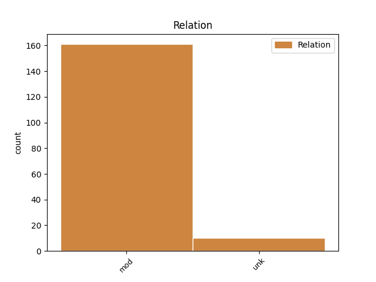
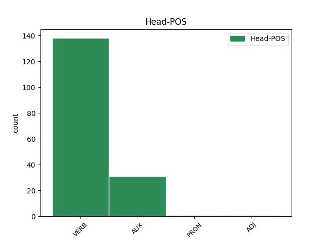
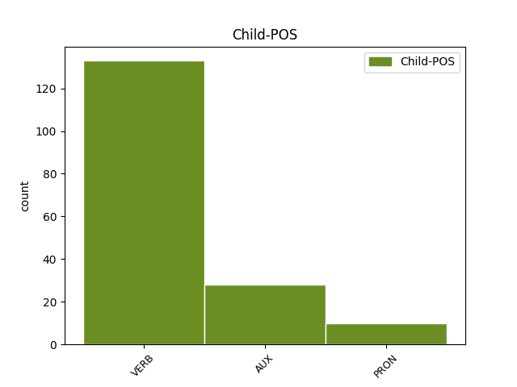

Distribution of features within this leaf



Agreement Rules sorted by frequency.
- When the dependent token is the modifer(mod) of the head token,
1 Тома _ _ _ _ 0 _ _ _
2 же _ _ _ _ 0 _ _ _
3 единъ _ _ _ _ 0 _ _ _
4 отъ _ _ _ _ 0 _ _ _
5 обою _ _ _ _ 0 _ _ _
6 на _ _ _ _ 0 _ _ _
7 десѧте _ _ _ _ 0 _ _ _
8 нарицаемꙑ _ _ _ _ 0 _ _ _
9 близнецъ _ _ _ _ 0 _ _ _
10 не _ _ _ _ 0 _ _ _
11 бѣ бꙑти AUX V- Aspect=Imp|Mood=Ind|Number=Sing|Person=3|Tense=Past|VerbForm=Fin|Voice=Act 0 _ _ _
12 тоу _ _ _ _ 0 _ _ _
13 съ _ _ _ _ 0 _ _ _
14 ними _ _ _ _ 0 _ _ _
15 егда _ _ _ _ 0 _ _ _
16 приде прити VERB V- Aspect=Perf|Mood=Ind|Number=Sing|Person=3|Tense=Past|VerbForm=Fin|Voice=Act 11 mod _ ref=JOHN_20.24
17 и҃с _ _ _ _ 0 _ _ _
1 ꙇ _ _ _ _ 0 _ _ _
2 азъ _ _ _ _ 0 _ _ _
3 оумолѭ _ _ _ _ 0 _ _ _
4 о҃тца _ _ _ _ 0 _ _ _
5 ꙇ _ _ _ _ 0 _ _ _
6 иного _ _ _ _ 0 _ _ _
7 параклита _ _ _ _ 0 _ _ _
8 дастъ _ _ _ _ 0 _ _ _
9 вамъ _ _ _ _ 0 _ _ _
10 да _ _ _ _ 0 _ _ _
11 бѫдетъ _ _ _ _ 0 _ _ _
12 съ _ _ _ _ 0 _ _ _
13 вами _ _ _ _ 0 _ _ _
14 вь _ _ _ _ 0 _ _ _
15 вѣкъ _ _ _ _ 0 _ _ _
16 д҃хъ _ _ _ _ 0 _ _ _
17 истинънꙑ _ _ _ _ 0 _ _ _
18 егоже _ _ _ _ 0 _ _ _
19 миръ _ _ _ _ 0 _ _ _
20 не _ _ _ _ 0 _ _ _
21 можетъ _ _ _ _ 0 _ _ _
22 приѩти _ _ _ _ 0 _ _ _
23 ѣко _ _ _ _ 0 _ _ _
24 не _ _ _ _ 0 _ _ _
25 видитъ видѣти VERB V- Mood=Ind|Number=Sing|Person=3|Tense=Pres|VerbForm=Fin|Voice=Act 0 _ _ _
26 его и PRON Pp Case=Gen|Gender=Masc|Number=Sing|Person=3|PronType=Prs 25 unk _ ref=JOHN_14.17
27 ни _ _ _ _ 0 _ _ _
28 знаатъ _ _ _ _ 0 _ _ _
29 его _ _ _ _ 0 _ _ _
Disagree Examples:
1 Ꙇ _ _ _ _ 0 _ _ _
2 иже _ _ _ _ 0 _ _ _
3 колижъдо _ _ _ _ 0 _ _ _
4 не _ _ _ _ 0 _ _ _
5 прииметъ приѩти VERB V- Mood=Ind|Number=Sing|Person=3|Tense=Pres|VerbForm=Fin|Voice=Act 18 mod _ ref=MATT_10.14
6 васъ _ _ _ _ 0 _ _ _
7 ни _ _ _ _ 0 _ _ _
8 послоушаатъ _ _ _ _ 0 _ _ _
9 словесъ _ _ _ _ 0 _ _ _
10 вашихъ _ _ _ _ 0 _ _ _
11 ꙇсходѧще _ _ _ _ 0 _ _ _
12 из _ _ _ _ 0 _ _ _
13 домоу _ _ _ _ 0 _ _ _
14 ли _ _ _ _ 0 _ _ _
15 из _ _ _ _ 0 _ _ _
16 града _ _ _ _ 0 _ _ _
17 того _ _ _ _ 0 _ _ _
18 отътрѧсѣте отътрѧсти VERB V- Mood=Imp|Number=Plur|Person=2|Tense=Pres|VerbForm=Fin|Voice=Act 0 _ _ _
19 прахъ _ _ _ _ 0 _ _ _
20 отъ _ _ _ _ 0 _ _ _
21 ногъ _ _ _ _ 0 _ _ _
22 вашихъ _ _ _ _ 0 _ _ _
1 Егда _ _ _ _ 0 _ _ _
2 же _ _ _ _ 0 _ _ _
3 прѣдаѭтъ прѣдаꙗти VERB V- Mood=Ind|Number=Plur|Person=3|Tense=Pres|VerbForm=Fin|Voice=Act 6 mod _ ref=MATT_10.19
4 вꙑ _ _ _ _ 0 _ _ _
5 не _ _ _ _ 0 _ _ _
6 пцѣте пещи VERB V- Mood=Imp|Number=Plur|Person=2|Tense=Pres|VerbForm=Fin|Voice=Act 0 _ _ _
7 сѧ _ _ _ _ 0 _ _ _
8 како _ _ _ _ 0 _ _ _
9 ли _ _ _ _ 0 _ _ _
10 что _ _ _ _ 0 _ _ _
11 възглаголете _ _ _ _ 0 _ _ _
1 Егда _ _ _ _ 0 _ _ _
2 же _ _ _ _ 0 _ _ _
3 гонѧтъ гонити VERB V- Mood=Ind|Number=Plur|Person=3|Tense=Pres|VerbForm=Fin|Voice=Act 8 mod _ ref=MATT_10.23
4 вꙑ _ _ _ _ 0 _ _ _
5 въ _ _ _ _ 0 _ _ _
6 градѣ _ _ _ _ 0 _ _ _
7 семь _ _ _ _ 0 _ _ _
8 бѣгаите бѣгати VERB V- Mood=Imp|Number=Plur|Person=2|Tense=Pres|VerbForm=Fin|Voice=Act 0 _ _ _
9 въ _ _ _ _ 0 _ _ _
10 дроугꙑ _ _ _ _ 0 _ _ _
1 бѫди бꙑти AUX V- Mood=Imp|Number=Sing|Person=3|Tense=Pres|VerbForm=Fin|Voice=Act 0 _ _ _
2 тебѣ _ _ _ _ 0 _ _ _
3 ѣкоже _ _ _ _ 0 _ _ _
4 хощеши хотѣти VERB V- Mood=Ind|Number=Sing|Person=2|Tense=Pres|VerbForm=Fin|Voice=Act 1 mod _ ref=MATT_15.28
1 вꙑ _ _ _ _ 0 _ _ _
2 шедъшеи _ _ _ _ 0 _ _ _
3 по _ _ _ _ 0 _ _ _
4 мънѣ _ _ _ _ 0 _ _ _
5 въ _ _ _ _ 0 _ _ _
6 пакꙑбꙑтии _ _ _ _ 0 _ _ _
7 егда _ _ _ _ 0 _ _ _
8 сѧдетъ сѣсти VERB V- Mood=Ind|Number=Sing|Person=3|Tense=Pres|VerbForm=Fin|Voice=Act 15 mod _ ref=MATT_19.28
9 с҃нъ _ _ _ _ 0 _ _ _
10 ч҃лвскꙑ _ _ _ _ 0 _ _ _
11 на _ _ _ _ 0 _ _ _
12 прѣстолѣ _ _ _ _ 0 _ _ _
13 славꙑ _ _ _ _ 0 _ _ _
14 своеѩ҅ _ _ _ _ 0 _ _ _
15 Сѧдете сѣсти VERB V- Mood=Ind|Number=Plur|Person=2|Tense=Pres|VerbForm=Fin|Voice=Act 0 _ _ _
16 и _ _ _ _ 0 _ _ _
17 вꙑ _ _ _ _ 0 _ _ _
18 на _ _ _ _ 0 _ _ _
19 дъвою _ _ _ _ 0 _ _ _
20 на _ _ _ _ 0 _ _ _
21 десѧте _ _ _ _ 0 _ _ _
22 прѣстолоу _ _ _ _ 0 _ _ _
23 сѫдѧште _ _ _ _ 0 _ _ _
24 обѣма _ _ _ _ 0 _ _ _
25 на _ _ _ _ 0 _ _ _
26 десѧте _ _ _ _ 0 _ _ _
27 колѣнома _ _ _ _ 0 _ _ _
28 и҃здраилвма _ _ _ _ 0 _ _ _